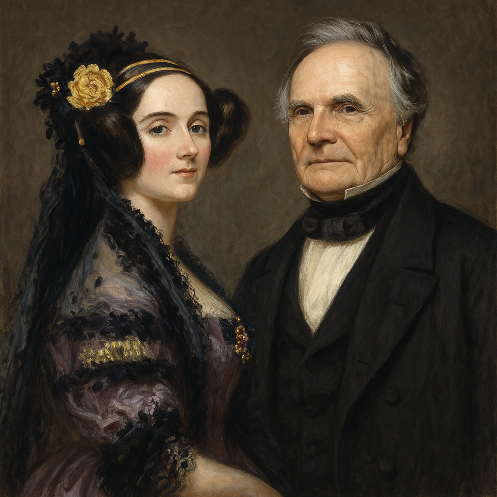

De acordo com Ramos, o brilhante matemático inglês Charles Babbage é conhecido como o “Pai do Computador”. Babbage projetou o chamado “Calculador Analítico”, muito próximo da concepção de um computador atual...
Ada inventou o conceito de subrotina, descobriu os laços e o desvio condicional. Santino (2015)
